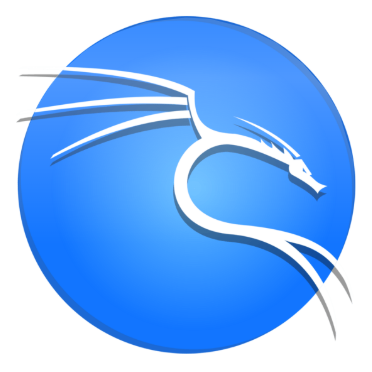
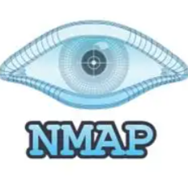
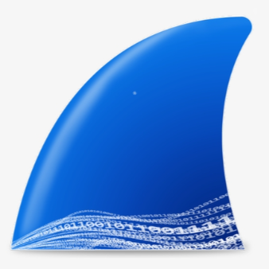
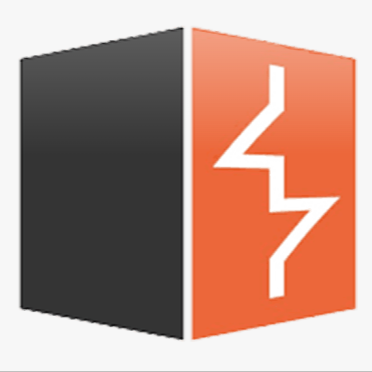
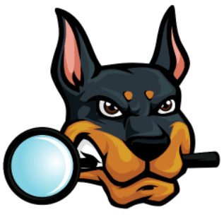
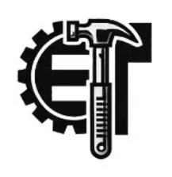
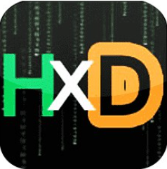
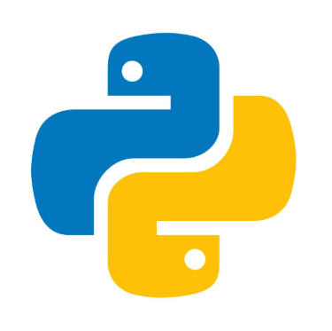
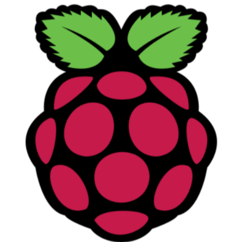

An industry baseline certification validates core knowledge in enterprise risk assessment, network architecture security, and fundamental cryptographic principles.
A practical, hands-on defensive security credential. It confirms immediate operational readiness for real-world incident response, digital forensics, and live log analysis.
A rigorous, practical offensive security certification. Planned for the long term to deeply understand attacker mindsets and strategies, which directly sharpens defensive logic.

Kali Linux
Nmap
Wireshark
Burp Suite
Autopsy
ExifTool
HxD Editor
Python
Raspberry PiComplete Semester 6 and transition into Semester 7 by deploying a hardware-software secure registration system using biometrics and AES-256 encryption. Secure a defensive cybersecurity internship at a local Security Operations Center (SOC) to gain industrial exposure.
Enter the industry as a full-time Tier 1 SOC Analyst focusing on daily alert triage and incident monitoring. Aim to achieve the CompTIA Security+ or Blue Team Level 1 (BTL1) certifications to validate core skills.
Advance into a Tier 2/3 Senior Incident Response or Threat Hunting role. Expand technical capabilities by mastering advanced attack vectors and earning the OSCP certification to sharpen analytical defense logic.
Transition into an executive technical role such as a Cybersecurity Solutions Architect. Focus on designing large-scale secure defense infrastructures, managing corporate threat containment strategies, and leading enterprise risk alignment.